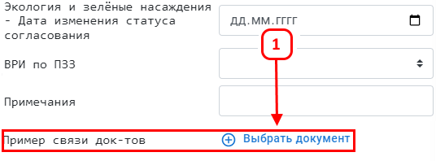
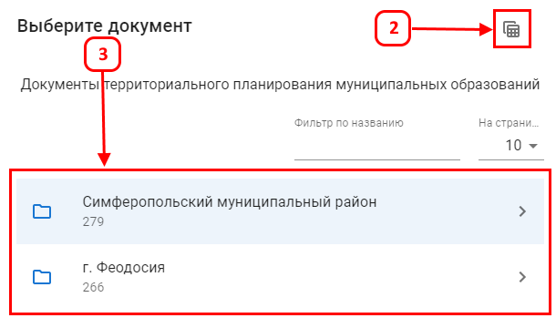
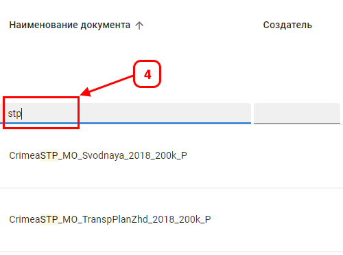

Данная функция предназначена для связи пространственного объекта карты с документами из библиотеки
Для связи пространственных объектов на карте с документами необходимо выбрать (1)

Для формирования связи необходимо указать требуемые документы
Выбрать документы связи можно:

Табличное представление позволяет применить фильтры и сортировку для отбора требуемых документов (4)

Результатом выполненных действий является возможность перехода к документу(ам) из объекта карты (5)